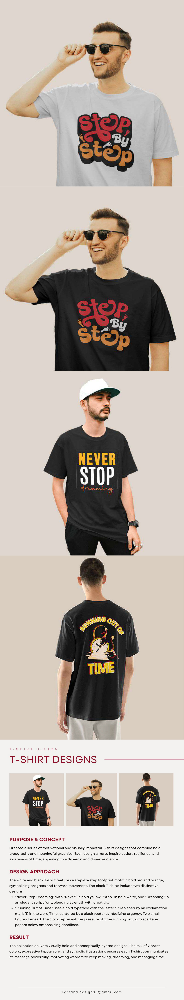

This page is image-based; text could not be extracted reliably.
Brand
Apparel graphics and branded T-shirt applications.
Apparel graphics and branded T-shirt applications. The presentation below contains the project visuals and supporting details.
ORIGINAL PROJECT PAGES
Each original page image is shown below. Text is included where it could be extracted reliably from the PDF.

This page is image-based; text could not be extracted reliably.